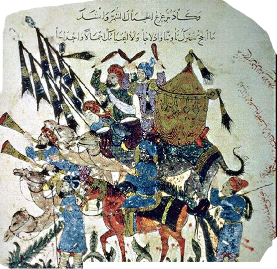

Введение в романо-германскую филологию
| лекция 1 | лекция 7 | лекция 8 |
| лекция 2 |  |
лекция 9 |
| лекция 3 | лекция 10 | |
| лекция 4 | лекция 11 | |
| лекция 5 | лекция 12 | |
| лекция 6 | лекция 13 |
ЛЕКЦИЯ 10:
Зачем понадобились арабы
Пробил час обратить наши взоры на Запад и к тому же дать задний ход, откатываясь из 1453 г., после которого Константинополь стал Стамбулом.
Вернемтесь-ка к первым годам эпохи ПРХ в Раннюю Римскую Империю, которая ещё не раскололась надвое, и имела пока еще только одну столицу – город
Рим!! Именно это имя он носит и поныне.
Как вы, надеюсь, ещё не забыли, переход из ДРХ в ПРХ совершился во время правления божественого кесаря Августа.
К упомянутому моменту римская научная мысль уже успешно переняла и усвоила понятия и терминологию науки греческой и продолжала цвести дальше под покровительством божественного (это непременный титул любого из римских императоров) Августа, который основал в Риме Палатинскую Библиотеку.
Мы неоднократно уже отмечали, что римская наука звёзд с неба не хватала, гениальных прорывов не делала, но дело свое знала туго, работала старательно и кропотливо. Она трудилась на будущее...
Плиний Старший (23-79: 26 августа, Везувий) написал энциклопедическую Historia Naturalis (historia = знание), которая впоследствии—в европейские Средние Века—служила основным первоисточником и учебным пособием для тогдашних научных поколений.
С 3 в. ПРХ для Римской Империи наступили трудные времена – на романо-германской границе было весьма неспокойно, чуть ли не безперестанку шли бои местного значения, которые порой перерастали в такие битвы, когда судьба всей империи висела на волоске.
Как говорится – варвары борзели и пёрли буром. Что, однако, не помешало плодотворной работе Аэлия Донатуса, грамматика и учителя риторики (зарплата учителя в государственных школах—установленная императором Веспасианом—составляла 100,000 сестерций в год), а также трудам поминавшегося уже Приска, автора самой знаменитой и живучей античной граматики.
И всё-таки, в Западной Римской Империи греческий язык вымер. Адвокаты в судах и ораторы на собраниях уже не щеголяли цитатами из греческих авторов, да и ранняя латинская литература находилась на грани исчезновения.
Дело в том, что в императоры начали выбиваться кто попало, вплоть до вчерашних рабов, если у них имелась «волосатая лапа» и дружки-корешки среди военщины. Чтобы выслужиться перед подобным императором знание греческой поэзии было уже никчему, а порой и вредно: какой император станет терпеть, чтобы кто-то представлялся умнее его?
В 476 г. сумеркам предзакатной империи настал, таки, конец – Рим был в очередной раз захвачен, император низложен – на Европу опустился мрак Средних Веков.
Но даже в эпоху раннего средневековья (5-6 в.в.) полного порыва с прошлым не произошло – язык квиритов был сохранен
церковью. Латынь стала языком церкви.
Монастыри – места сбора людей склонных жить не по закону клыка и кулака, а на разумных началах – стали хранилищем обрывков римской литературы.
Всякому разгулу приходит похмелье: героические варвары, или варварские герои, вдоволь насовершались своих подвигов – поизнасиловали кто сколько смог, награбили, кому сколько подвернулось, повырубали цветущие сады, чтоб было на чем жарить мясо; вобщем – погеройствовали; а очухавшись увидели себя перед суровой необходимостью жить дальше в условиях, когда грабить уже некого – соседи такие же варвары, в таких же шкурах, у которых так же трещит голова, а на столе точно такое же каждодневное хлёбово из варёной полбы
А на некоторых устоявших стенах спаленых ими римских вилл картинки такой жизни, что просто слюнки текут и капают.
И выходит – если хочешь жить красиво и в достатке – образумляйся, и учителя не заставили себя ждать...
Хата Ирландии стояла с такого далёкого края, что волны варварских гулеваний туда не докатывались, и христианство, давно путившее корни на этом острове, жило привольно и без утеснений; процветали монастыри – центры умственного труда и культурного сельского хозяйства.
И вот казалось бы: живешь, не трогают тебя, так сиди и не рыпайся – не сучи ногами... Но у христианства на ту пору была уже сформулирована своя программа.
Это при режиме античных богов человек являлся мерой, которой дадена была задача познать себя и потому целью цивизации могла считаться и самоизмерительная философия. Христианской же религией человек был разжалован из средства и цели познания в инструменты, он стал орудием исполнения воли Бога и главная его задача – служить Ему (а не мудрствовать).
Идея, вобщем-то, не новая; стоики, если помните, тоже призывали на службу космическому городу – понятие не менее растяжимое, чем служение Богу.
Впрочем, в средние века его не слишком-то растягивали: служить Богу значило – выполнять веления Его представителей на земле, а представителями числились церковное руководство и политические правители – то есть, главари тех банд, что согласились перейти в христианскую веру.
Великий подвиг обращения германских племен в христианство был совершен монахами-миссионерами из Ирландии, которые нередко и гибли при исполнении миссионерских обязанностей, убеждая язычников принять эту веру. И вера, таки, прижилась, и начали воздвигаться в Западной Европе церкви и монастыри, где служили Господу и пели ему славу на квиритском, заметьте, языке, поскольку латынь была одним из непременных атрибутов западного христианства.
И была она не только атрибутом, но и средством общения между разноязычными племенами.
А ещё она была орудием познания, поскольку вся научная работа и хранение информации велись в средние века по всей Европе именно на этом языке.
Латынь стала той лямкой-упряжью, в которую зауздались вчерашние варвары-язычники, чтобы тащить дальше воз западной цивилизации (а тащить обузу эту надо, чтобы легче было жить).
По-первах, научная часть воза особо не прогрессировала – в монастырях занимались, главным образом, переписыванием.
Особо отличился в этом Серват Лупус (Servatus Lupus) (805-862), аббат Феррирский, организовавший широкомасштабное переписывание древних рукописей/манускриптов.
И всё-таки, труд на цивилизацию окупается. В 10-м в., сооружая соборы, неплохо навострились в строительном деле; научились, как уже отмечалось, выращивать фасоль – больше стало времени свободного от борьбы с непогодами и голоданиями – пришла пора заводить университеты.
А на каком, позвольте вас спросить, языке велось обучение в тех университетах
Вот потому-то преподаватели вполне могли тасоваться из одной страны в другую.
И чему же в них обучали?
Медицина, астрономия, физика – это уже были отдельные науки, вылупившиеся из подразделов античной философии, о которых мы с вами говорили на заре вникания в РГФ.
От какого подраздела ведёт свою родословную астрономия? А медицина? А каким был третий – вернее наипервейший – подраздел?
Вот из него-то и вылупился такой научный предмет, как богословие. Вылупился и мамашу свою превратил в личную домработницу – философия стала служанкой богословия.
Мало того, богословие ещё и у второго подраздела кусок оттяпало, оставив медицине только тело человеческое, а душу и всякие там черты характера забрав под свой контроль.
Однако, университеты были не только у христиан: были они и у мусульман-арабов. Хотя бы в той же Испании, в городе Кордова.
А мусульмане с христианами не только воевали, иногда случались меду ними и «брейн-ринги» на отвлечённые темы в основном, конечно, про Бога.
И в этих диспутах арабы очень даже запросто натягивали христианских умников. С чего бы это?
Оказывается они, отобрав у Византии, как вы помните, Палестину, Сирию и Египет, подначитались в тамошних библиотеках трудов Аристотеля – натренировались логике из его ОРГАНОНА.
Пришлось европейцам перенимать у арабов не только
мыло, но и Аристотеля.
А поскольку арабы Аристотеля порядком арабизировали, то надо было его сверять с оригиналами переводов древними римлянами с греческого на латинский, копии которых кое-где завалялись по монастырям (прослеживаете нить?), либо разобраться в копиях с греческого на греческий, из тех что крестоносцы не успели полностью изничтожить при взятии Константинополя
и которые православная византийская церковь согласна была уступить по сходной цене (конец нити).
Вот когда грянул час воскрешения греческих лексиконов, словарей, учебников в Западной Европе. Вот когда филология была призвани на службу Богу.
Логика – и это вам уже известно – стала наипервейшим вводным курсом в университетах.
Что такое логика?
Инструмент делания философии. Способ рассуждать о мире, жизни, человеке, Боге.
Это—с одной стороны—двери, а с другой – это технический язык, в котором долгие рассуждения подменяются короткими формулами.
Так вот, средневековые знатоки этого языка (логики), именуемые ещё схоластами, не только изучали этот язык, но и модернизировали, доводя своими «рацухами» до такой степени алгебраизации, что без вводного курса в нём никак было не разобраться.
Схоласты оставили по себе обширную, до сих пор толком не исследованную литературу, полную тонких наблюдений и остроумных уточнений относительно грамматико-синтаксической структуры языка.
Да, разумеется, языка латинского, но по этой же модели анализируются и нынешние.
С воскрешением филологии воскрес и спор насчёт возникновения языка, как такового. За кого были схоласты в этом споре?
Шевельнув мозгою, можно вычислить и самим. Схоласты, они ведь – кто? Христиане. И по их программе/догме человек есть орудие в руках Божьих, а орудию не положено сотворять; участь орудия в том, чтобы быть применяемым.
Таким образом, схоласты продолжали гнуть линию аномалистов-стоиков и задачей их было показать, как отражается в языке растворённый в мире Промысел Господень. Показать на конкретных примерах и каким именно способом присходит растворение/отражение.
Что они и делали в своих работах, которые, почти сплошь, назывались «О способе обозначения того-то или сего-то». По латыни «О способе...» будет “De Modis…”, вот почему вся эта схоластическая литература носит ещё общее название modistae.
Но всему на свете прихожит конец. Приближались к завершенинию и Средние Века, под занавес которых итальянский поэт Данте Алигьери (1265-1321) до того изнемог от латыни, что пререшёл на родной – итальянский, и в своём, пока ещё, бессмертном творении БОЖЕСТВЕННАЯ КОМЕДИЯ, при описании неба и небесной механики использовал домыслы изложенные Аристотелем в своих трудах.
Таким образом, отшвырнутый варварством к востоку – на Балканский полуостров и в Малую Азию – аристотелизм обогнул Средиземное море снизу и вбумеранжился в Европу с запада, через Пиринейский полуостров, которым тогда владели арабы.
Однако, даже у меня не хватит наглости заявить, что исторической целью/предназначением ислама было возвращение западной цивилизации одного из её же истоков – наследия Аристотеля.
К столь скромной сдержанности меня побуждает то обстоятельство, что история ислама ещё далеко не закончена, а так же и то соображение, что арабы вернули не одного только Аристотеля. Он—в сущности—оказался Троянским конем, нутро которого напичкано было цитатами, ссылками и указаниями на произведения других античных авторов, что вполне годились для заполнения времени и возбуждения любопытства европейцев по горло сытых
«лобушором».лобушор —
на карабахском диалекте армянского означает:
"бобовая похлёбка"
ЗАДАНИЕ:
- парон
- барон
- барин
- пан
есть растворенным отражением/указанием на превосходство человека над себе подобными?